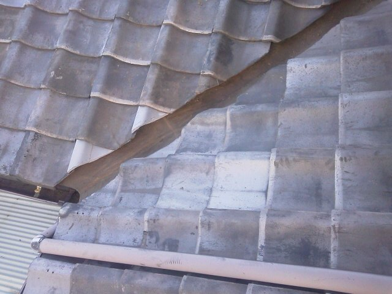

昨日、茅ヶ崎本村のお宅の雨漏りに付随する補修工事を終えました。 大きくは、4ヵ所で雨漏りが発生していました。 当初は、１ヵ所ということでしたが、作業を見ていて安心して頂けたのか、 「実はあそこも」と増やして頂きました。 瓦屋根で、雨が瓦のすき間に吹き込んで入ってしまう雨漏り。 瓦の寄せた部分の谷樋（銅板）の劣化による亀裂、穴からの雨漏り。 谷樋の作りが悪かった為、雨水が瓦内へ流入してしまう雨漏り。 雨水が、その部分に集中してしまう為が原因の雨漏り。 以上の、色々の原因で雨漏りが各所にありました。 この日は、谷樋脇に欠損していた瓦を２枚取り付けました（注文品が届いたので） ※写真の三角形をした瓦です（加工したので）。 ３日ほど前、強く吹きつけた雨が降りましたので、お客様にお聞きしましたが、 「漏りませんでした、大丈夫でした、これで安心できます！」と言って頂き。 私も、とりあえずは、良かったと思えました。
瓦屋根雨漏り修理
